C4 Automatic and C4S Semi-Automatic Transmissions · 17-02-11
Disassembly
-
Remove the four seal rings from stator support.
-
Remove the five bolts that attach the stator support to the front pump housing. Remove the stator support from the pump housing (Fig. 68).
-
Remove the front and rear stator bushings if they are worn or damaged. Use the cape chisel (Fig. 69) and cut along the bushing seam until the chisel breaks through the bushing wall. Pry the loose ends of the bushing up with an awl and remove the bushing.
-
Remove the drive and driven gears from the front pump housing.
-
Press the bushing from the front pump housing as shown in Fig. 70.
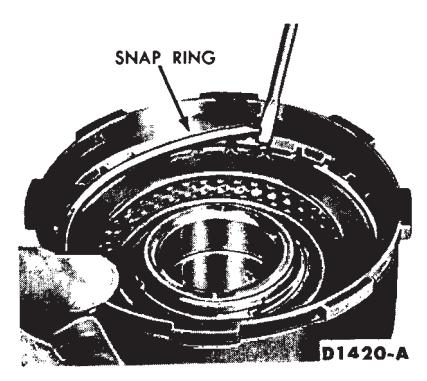
Fig. 74 — Removing or Installing Reverse—High Pressure Plate Snap Ring
Assembly
-
Press a new bushing into the pump housing with the handle and tool shown in Fig. 70. Make sure the bushing is installed with the slot and groove positioned to the rear of the pump body and 60 degrees below the horizontal center line.
-
Install the drive and driven gears in the pump housing. Each gear has an identification mark on the side of the gear teeth that are chamfered. The chamfered side with the identification mark has to be positioned downward against the face of the pump housing.
-
Press new bushings into the stator support with the tool shown in Fig. 71. Use the long end of the tool for the front bushing and the short end for the rear bushing. When installing the rear bushing, be sure the hole in the bushing is lined up with the lube hole in the stator support.
-
Place the stator support in the pump housing and install the five attaching bolts. Torque the bolts to specifications.
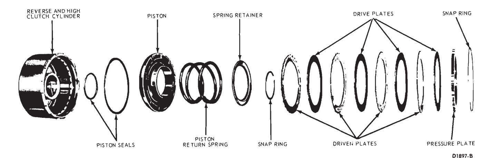
Fig. 75 — Reverse-High Clutch Disassembled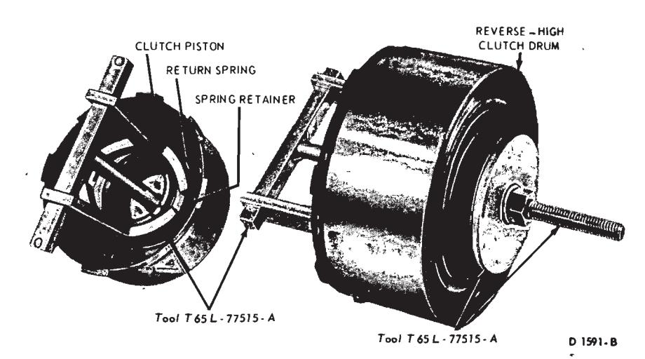
Fig. 76 — Removing or Installing Reverse—High Clutch Piston Spring Snap Ring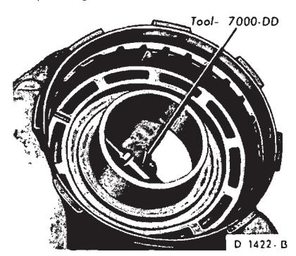
Fig. 77 — Removing Reverse—High Clutch Piston -
Install the four seal rings on the stator support. The two large oil rings are assembled first in the oil ring grooves toward the front of the stator support (Fig. 68).
-
Check the pump for free rotation by placing the pump on the converter drive hub in its normal running position and turning the pump housing.
-
If the front pump seal must be replaced, mount the pump in the transmission case and remove the seal with the tool shown in Fig. 72. To install the new seal, use the tool shown in Fig. 73.
Reverse-High Clutch
Disassembly
-
Remove the pressure plate retaining snap ring (Fig. 74).
-
Remove the pressure plate, and the drive and driven clutch plates (Fig. 75). If the composition clutch plates are to be reused, do not clean them in a vapor degreaser or with a detergent solution. Wipe the plates with a lint-free cloth.
-
To remove the piston spring retainer snap ring, place the clutch hub in the arbor press. With the tools shown in Fig. 76, compress the piston return springs and remove the snap ring. When the arbor press ram is released, guide the spring retainer to clear the snap ring groove of the drum.
-
Remove the spring retainer and piston return spring.
-
Remove the piston by inserting air pressure in the piston apply hole of the clutch hub (Fig. 77).
-
Remove the piston outer seal from the piston and the piston inner seal from the clutch drum (Fig. 75).
-
Remove the drum bushing if it is worn or damaged. Use the cape chisel (Fig. 78) and cut a shallow groove 3/4 inch in length along the bushing seam until the chisel breaks through the bushing wall. Pry the loose ends of the bushing up with an awl and remove the bushing. To prevent leakage at the stator support O-rings, be careful not to nick or damage the hub surface with the chisel.
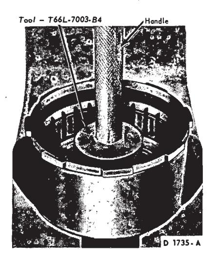
Fig. 78 — Removing Reverse—High Clutch Bushing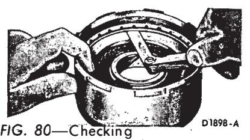
Fig. 79 — Installing Reverse—High Clutch Bushing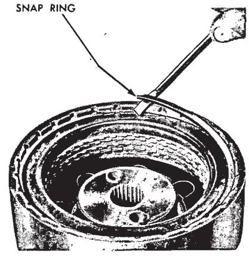
Fig. 81 — Removing or Installing Forward Clutch Pressure Plate Snap Ring
Assembly
-
Position the drum in a press and press a new bushing into the drum with the handle and tool shown in Fig. 79.
-
Install a new inner seal in the clutch drum and a new outer seal on the clutch piston. Lubricate the seals with clean transmission fluid and install the piston into the clutch drum.
-
Place the clutch piston spring into position on the clutch piston. Place the spring retainer on top of the spring. To install the snap ring use the tools shown in Fig. 76.
As the press ram is moved downward, make sure the spring retainer is centered to clear the snap ring groove. Install the snap ring.
-
When new composition clutch plates are used, soak the plates in transmission fluid for fifteen minutes before installing them. Install the clutch plates alternately starting with a steel plate, then a non-metallic plate (Fig. 75). The last plate installed is the pressure plate. For the correct number of clutch plates required for each transmission model, refer to the Specification Section.
-
Install the pressure plate retaining snap ring (Fig. 75). Make sure the snap ring is fully seated in the snap ring groove of the clutch hub.
-
With a feeler gauge, check the clearance between the snap ring and the pressure plate (Fig. 80).
-
The pressure plate should be held downward as the clearance is checked. The clearance should be 0.050 to 0.071 inch. If the clearance is not within specifications, selective thickness snap rings are available in these thicknesses, 0.050-0.054, 0.064-0.068, 0.078-0.082 and 0.092-0.096 inch. Install the correct size snap ring and recheck the clearance.
Forward Clutch
Disassembly
-
Remove the clutch pressure plate retaining snap ring (Fig. 81).
-
Remove the pressure plate, and the drive and driven clutch plates from the clutch hub (Fig. 82).
-
Remove the disc spring retaining snap ring (Fig. 83).
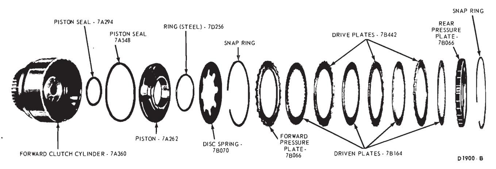
Fig. 82 — Forward Clutch Disassembled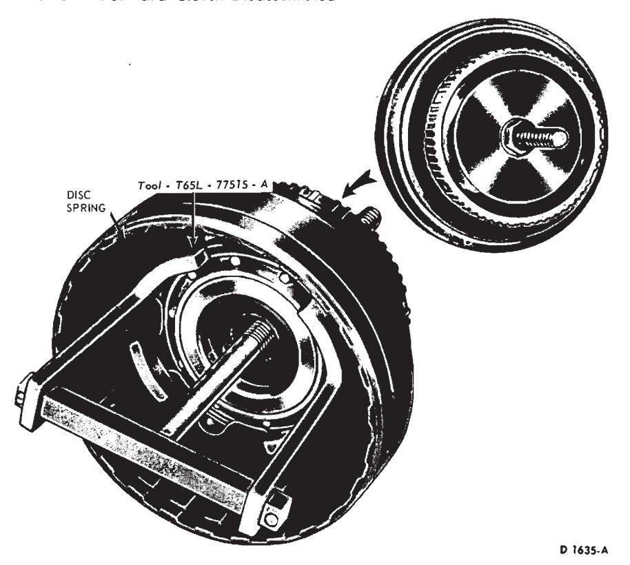
Fig. 83 — Removing Disc Spring -
Apply air pressure at the clutch piston pressure hole (Fig. 84) to remove the piston from the clutch hub.
-
Remove the clutch piston outer seal and the inner seal from the clutch hub (Fig. 82).
Assembly
-
Install new clutch piston seals on the clutch piston and drum. Lubricate the seals with clean transmission fluid.
-
Install the clutch piston into the clutch hub. Install the disc spring and retaining snap ring (Fig. 82).
-
Install the lower pressure plate with the flat side up and the radius side downward. Install one non-metallic clutch plate and alternately install the drive and driven plates. Before installing new composition clutch plates, soak them in transmission fluid for fifteen minutes. The last plate installed will be the upper pressure plate. Refer to the Specification Section for the correct number of clutch plates for the applicable model transmission.
-
Install the pressure plate retaining snap ring (Fig. 82). Make sure the snap ring is fully seated in the ring groove of the clutch hub.
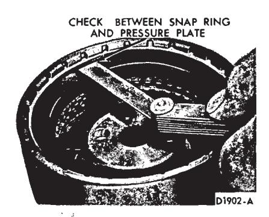
Fig. 84 — Removing Forward Clutch Piston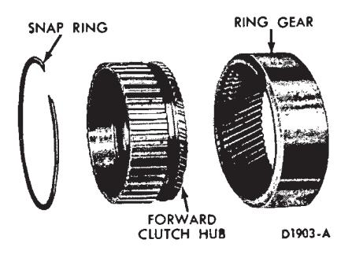
Fig. 85 — Checking Forward Clutch Snap Ring Clearance
Fig. 86 — Forward Clutch Hub and Ring Gear Disassembled -
With a feeler gauge, check the clearance between the snap ring and the pressure plate (Fig. 85). Downward pressure on the plate should be used when making this check. The clearance should be 0.025-0.050 inch.
-
If the clearance is not within specifications, selective snap rings are available in these thicknesses: 0.050-0.054, 0.064-0.068, 0.078-0.082 and 0.092-0.096 inch. Insert the correct size snap ring and recheck the clearance.
Forward Clutch Hub and Ring Gear
Disassembly
- Remove the forward clutch hub retaining snap ring (Fig. 86).
- Remove the forward clutch hub from the ring gear.
- Press the bushing from the clutch hub as shown in Fig. 87.
Assembly
-
Install a new bushing into the clutch hub as shown in Fig. 87.
-
Install the forward clutch hub in the ring gear. Make sure the hub is bottomed in the groove of the ring gear.
-
Install the front clutch hub retaining snap ring. Make sure the snap ring is fully seated in the snap ring groove of the ring gear.
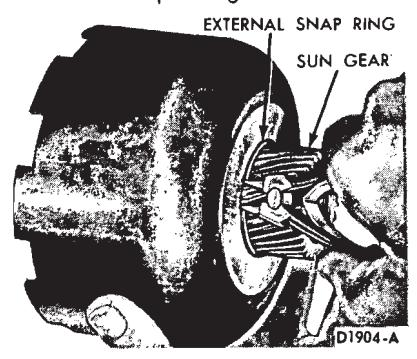
Fig. 87 — Replacing Forward Clutch Hub Bushing
Fig. 88 — Removing or Installing Sun Gear External Snap Ring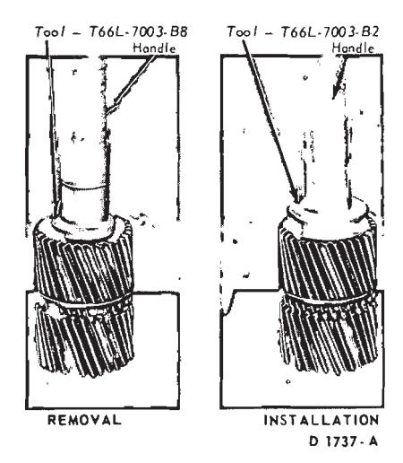
Fig. 89 — Input Shell and Sun Gear Disassembled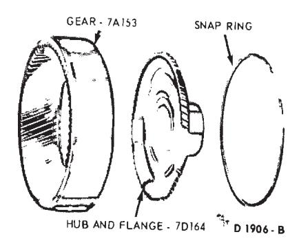
Fig. 90 — Replacing Sun Gear Bushing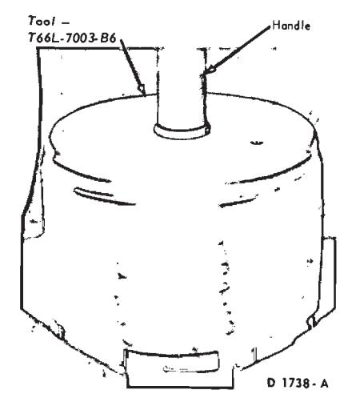
Fig. 91 — Reverse Ring Gear and Hub Disassembled
Fig. 92 — Installing Low and Reverse Brake Drum Bushing
Input Shell and Sun Gear
Disassembly
-
Remove the external snap ring from the sun gear (Fig. 88).
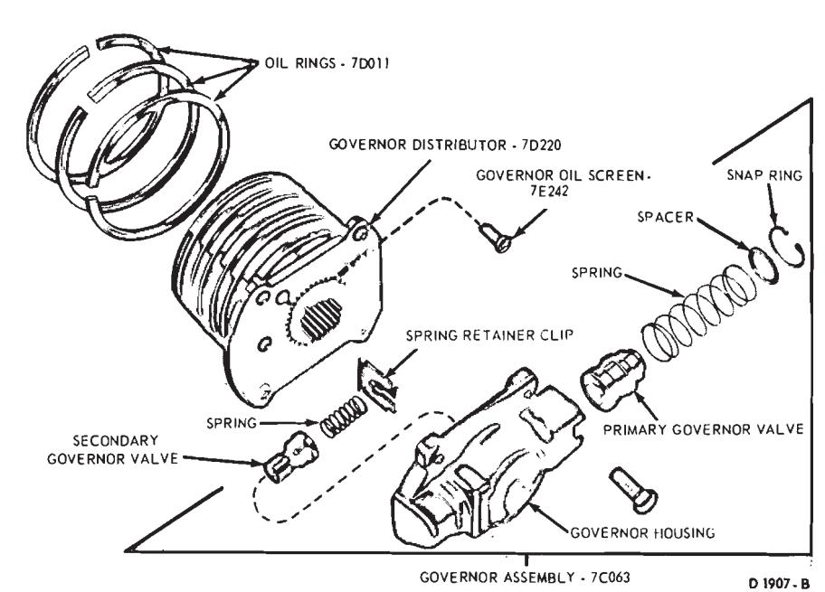
Fig. 93 — Governor and Oil Distributor—C4 Automatic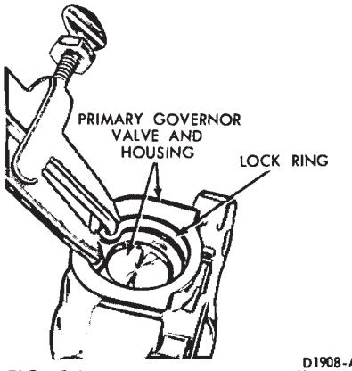
Fig. 94 — Removing or Installing Retaining Ring -
Remove thrust washer No. 5 from the input shell and sun gear (Fig. 89).
-
From inside the input shell, remove the sun gear. Remove the internal snap ring from the sun gear.
-
If the sun gear bushings are to be replaced, use the tool shown in Fig. 90 and press both bushings through the gear.
Assembly
- Press a new bushing into each end of the sun gear with the tool shown in Fig. 90.
- Install the internal snap ring on the sun gear. Install the sun gear in the input shell.
- Install thrust washer No. 5 on the sun gear and input shell (Fig. 89).
- Install the external snap ring on the sun gear (Fig. 88).
Reverse Ring Gear and Hub
Disassembly
- Remove the hub retaining snap ring from the reverse ring gear.
- Remove the hub from the reverse ring gear (Fig. 91).
Assembly
- Install the hub in the reverse ring gear. Make sure the hub is fully seated in the groove of the ring gear.
- Install the snap ring in the reverse ring gear. Make sure the snap ring is fully seated in the snap ring groove of the ring gear.